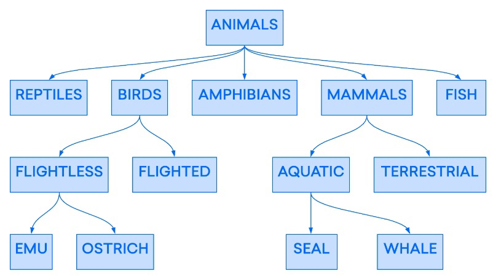

История реляционных систем управления базами данных 1. Введение Системы управления базами данных (СУБД) — это компьютерные программы, которые позволяют пользователям взаимодействовать с базой данных. СУБД позволяет пользователям контролировать доступ к базе данных, записывать данные, запускать запросы и выполнять любые другие задачи, связанные с управлением базами данных. Однако для выполнения любой из этих задач СУБД должна иметь в основе модель, определяющую организацию данных. Реляционная модель — это один из подходов к организации данных, который широко используется в программном обеспечении баз данных с момента своего появления в конце 60-х годов. Этот подход настолько распространен, что на момент написания данной статьи четыре из пяти самых популярных систем управления базами данных являются реляционными. В этой концептуальной статье представлена история реляционной модели, порядок организации данных реляционными системами и примеры использования в настоящее время. 2. История реляционной модели Базы данных — это логически сформированные кластеры информации, или данных. Любая коллекция данных является базой данных, независимо от того, как и где она хранится. Шкаф с платежными ведомостями, полка в регистратуре с карточками пациентов или хранящаяся в разных офисах клиентская картотека компании — все это базы данных. Прежде чем хранение данных и управление ими с помощью компьютеров стало общей практикой, правительственным организациям и коммерческим компаниям для хранения информации были доступны только физические базы данных такого рода. Примерно в середине XX века развитие компьютерной науки привело к созданию машин с большей вычислительной мощностью, а также с увеличенными возможностями встроенной и внешней памяти. Эти достижения позволили специалистам в области вычислительной техники осознать потенциал таких устройств в области хранения и управления большими массивами данных. Однако не существовало никаких теорий о том, как компьютеры могут организовывать данные осмысленным, логическим образом. Одно дело хранить несортированные данные на компьютере, но гораздо сложнее создать системы, которые позволяют последовательно добавлять, извлекать, сортировать и иным образом управлять этими данными на практике. Необходимость в логической конструкции для хранения и организации данных привела к появлению ряда предложений по использованию компьютеров для управления данными. Одной из ранних моделей базы данных была иерархическая модель, в которой данные были организованы в виде древовидной структуры, подобной современным файловым системам. Следующий пример показывает, как может выглядеть часть иерархической базы данных, используемой для классификации животных: Пример иерархической базы данных: классификация животных  Иерархическая модель была широко внедрена в ранние системы управления базами данных, но она отличалась отсутствием гибкости. В этой модели каждая запись может иметь только одного «предка», даже если отдельные записи могут иметь несколько «потомков». Из-за этого эти ранние иерархические базы данных могли представлять только отношения «один к одному» или «один ко многим». Отсутствие отношений «много ко многим» могло привести к возникновению проблем при работе с точками данных, которые требуют привязки к нескольким предкам. В конце 60-х годов Эдгар Ф. Кодд (Edgar F. Codd), программист из IBM, разработал реляционную модель управления базами данных. Реляционная модель Кодда позволила связать отдельные записи с несколькими таблицами, что дало возможность устанавливать между точками данных отношения «много ко многим» в дополнение к «один ко многим». Это обеспечило большую гибкость по сравнению с другими существующими моделями, если говорить о разработке структур баз данных, а значит реляционные системы управления базами данных (РСУБД) могли удовлетворить гораздо более широкий спектр бизнес-задач. Кодд предложил язык для управления реляционными данными, известный как Alpha, оказавший влияние на разработку более поздних языков баз данных. Коллеги Кодда из IBM, Дональд Чемберлен (Donald Chamberlin) и Рэймонд Бойс (Raymond Boyce), создали один из языков под влиянием языка Alpha. Они назвали свой язык SEQUEL, сокращенное название от Structured English Query Language (структурированный английский язык запросов), но из-за существующего товарного знака сократили название до SQL (более формальное название — структурированный язык запросов). Из-за ограниченных возможностей аппаратного обеспечения ранние реляционные базы данных были все еще непозволительно медленными, и потребовалось некоторое время, прежде чем технология получила широкое распространение. Но к середине 80-х годов реляционная модель Кодда была внедрена в ряд коммерческих продуктов по управлению базами данных от компании IBM и ее конкурентов. Вслед за IBM, эти поставщики также стали разрабатывать и применять свои собственные диалекты SQL. К 1987 году Американский национальный институт стандартов и Международная организация по стандартизации ратифицировали и опубликовали стандарты SQL, укрепив его статус признанного языка для управления РСУБД. Широкое использование реляционной модели во многих отраслях привело к тому, что она была признана стандартной моделью для управления данными. Даже с появлением в последнее время все большего числа различных баз данных NoSQL реляционные базы данных остаются доминирующим инструментом хранения и организации данных.